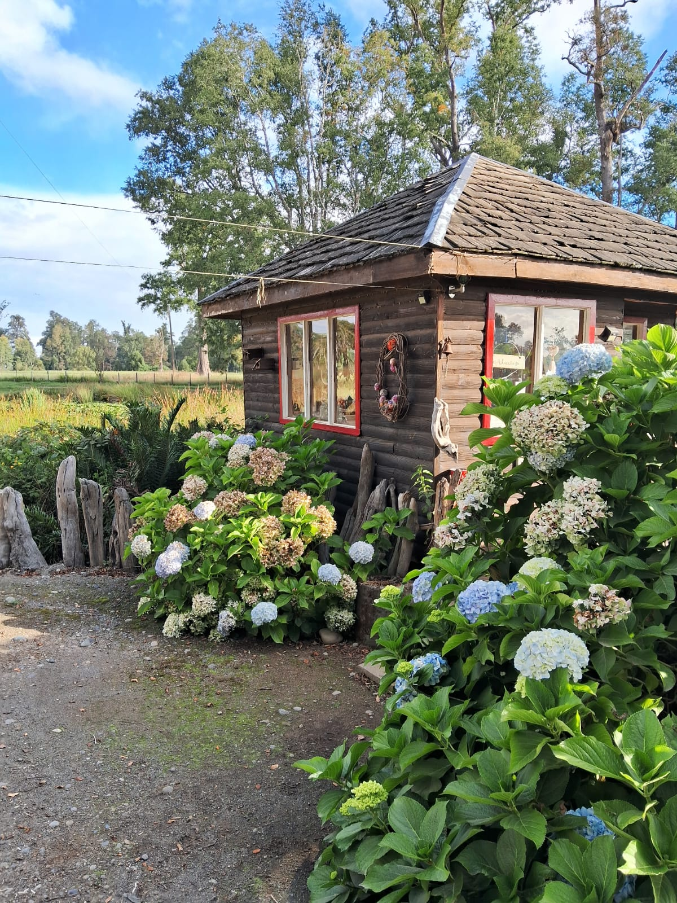

Purranque · Región de Los Lagos
Frutales para el Sur de Chile
Vivero familiar con más de 40 variedades producidas en el propio terreno, adaptadas al suelo y clima del sur. Asesoría directa de Ingeniero Agrónomo.
Todos los árboles son producidos en el vivero, sin intermediarios. Garantizamos origen, sanidad y adaptación a la zona.
Conservamos y propagamos variedades tradicionales del sur, difíciles de encontrar en viveros comerciales.
Atención directa de Ingeniero Agrónomo UACH especialista en frutales del sur, manejo de plagas e injertos.

Quiénes somos
Vivero EcoSur se ubica cerca de Purranque, en un entorno privilegiado de la Décima Región de Los Lagos. Somos un vivero familiar especializado en la producción de frutales adaptados a las condiciones de suelo y clima del sur de Chile.
Nuestra especialización incluye el control de plagas y enfermedades en frutales, realización de injertos y podas. Conservamos variedades típicas de la zona que son difíciles de encontrar en otros viveros.
Ingeniero Agrónomo · Universidad Austral de Chile